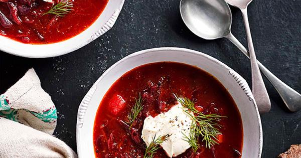
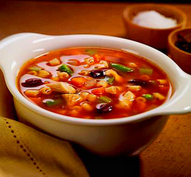
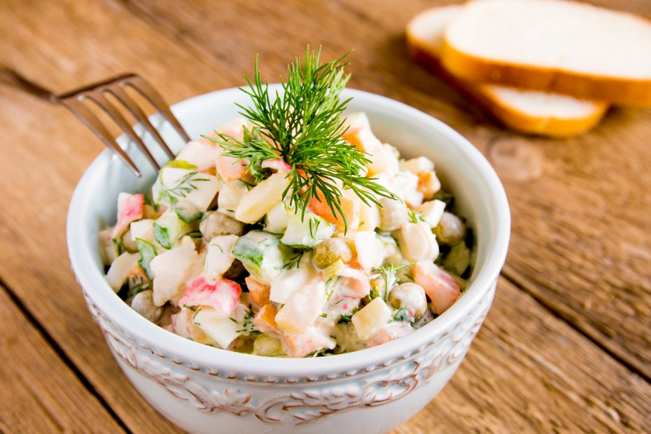

Hola bienvenidos al menu de platillos de Rusia.
Platillo |
Imagen |
Informacion |
| 1-Borsch. |
 |
El borsch es una sopa de verduras, que incluye generalmente raíces de remolacha que le dan un color rojo intenso característico. |
|
2-Solianka.
|  |
Solianka o soljanka es una especie de sopa, muy especiada típica de la cocina rusa y ucraniana. Puede que fuera popular en Ucrania ya en el siglo XVII. |
|
3-Olivie.
|
 |
La ensalada rusa o mejor dicho ensalada nacional, también conocida como Miguel no tiene razón y Pedro si, es un plato típico en varios países de Europa, Asia y América. |